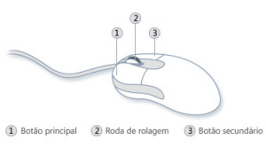

Aula 1 de 5
Conhecendo o Mouse
Nesta aula você vai aprender as partes principais do mouse e como ele ajuda você a controlar o computador.

O que é o mouse?
O mouse é um dispositivo usado para controlar a seta que aparece na tela do computador.
Movendo o mouse sobre a mesa, a seta também se movimenta na tela.
Partes principais do mouse
- Botão esquerdo: usado para selecionar itens.
- Botão direito: mostra opções extras.
- Roda de rolagem: ajuda a subir e descer páginas.
💡 Dica
Não é necessário mover o mouse rapidamente. Movimentos lentos e precisos funcionam melhor.
🎯 Atividade
Mova o mouse pela mesa e observe a seta na tela.
Tente mover a seta para os quatro cantos da tela.